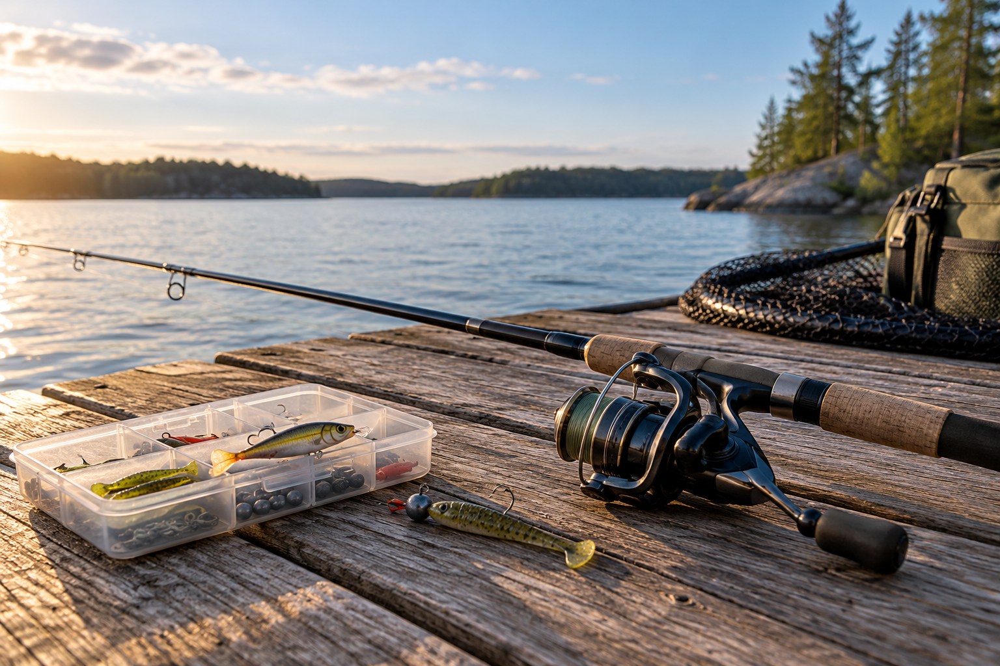

Trin 1
Find dit første udstyr
Du behøver ikke investere i dyrt udstyr for at komme i gang med lystfiskeri. Med en fiskestang, et fiskehjul og nogle få agn er du allerede godt på vej.
Start simpelt, og lær dit udstyr at kende, før du begynder at udvide din samling.
